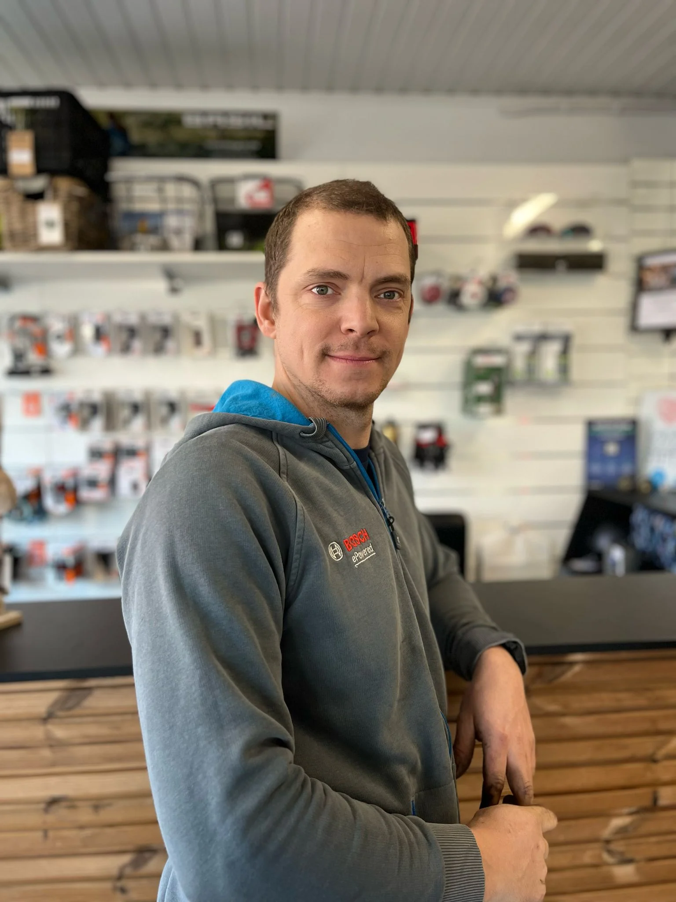
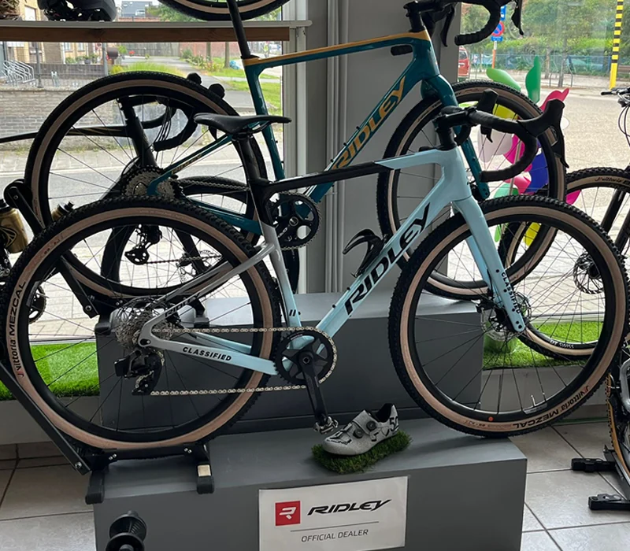
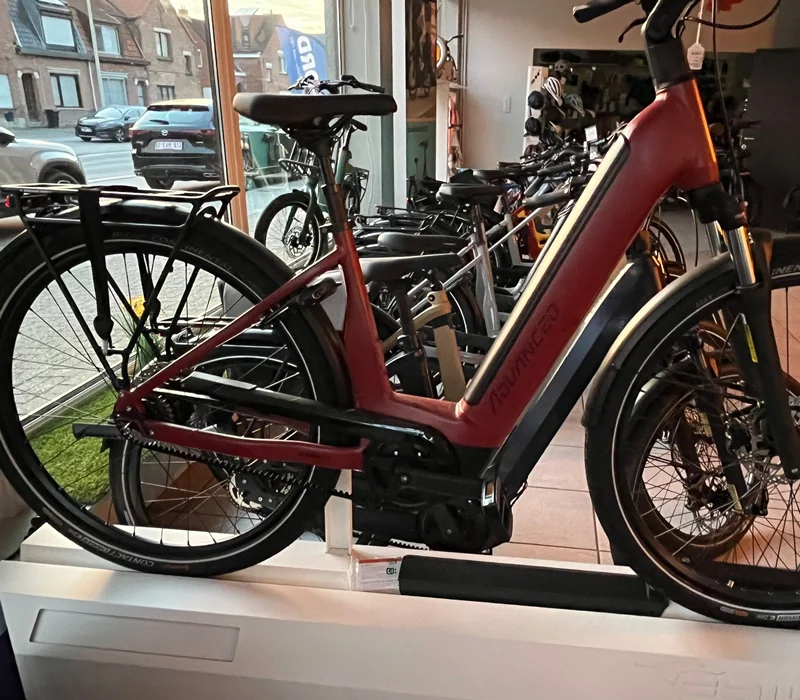
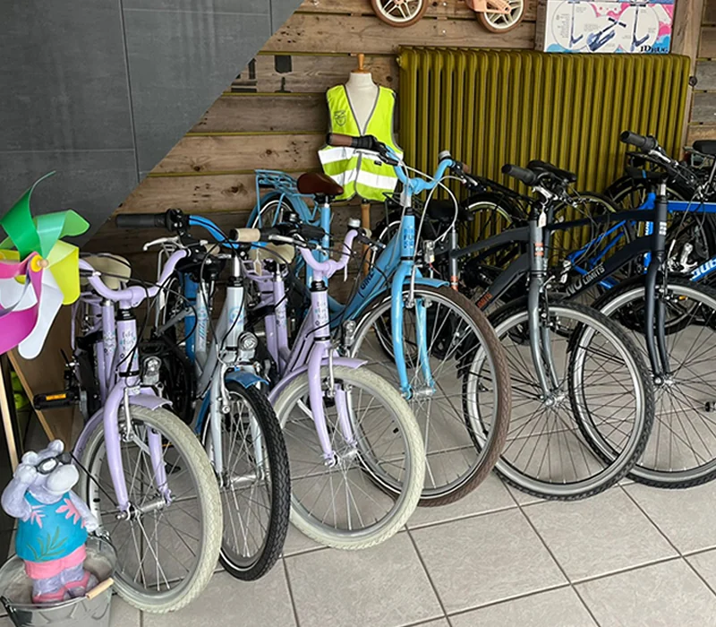
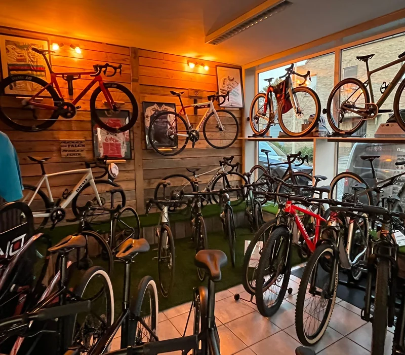
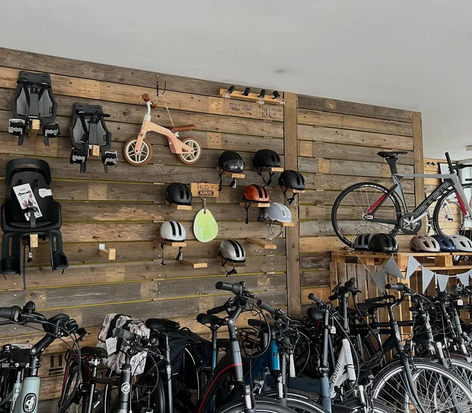
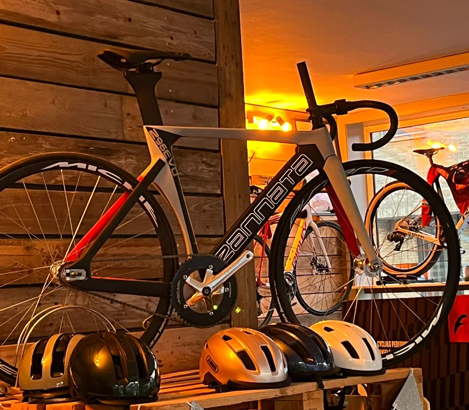
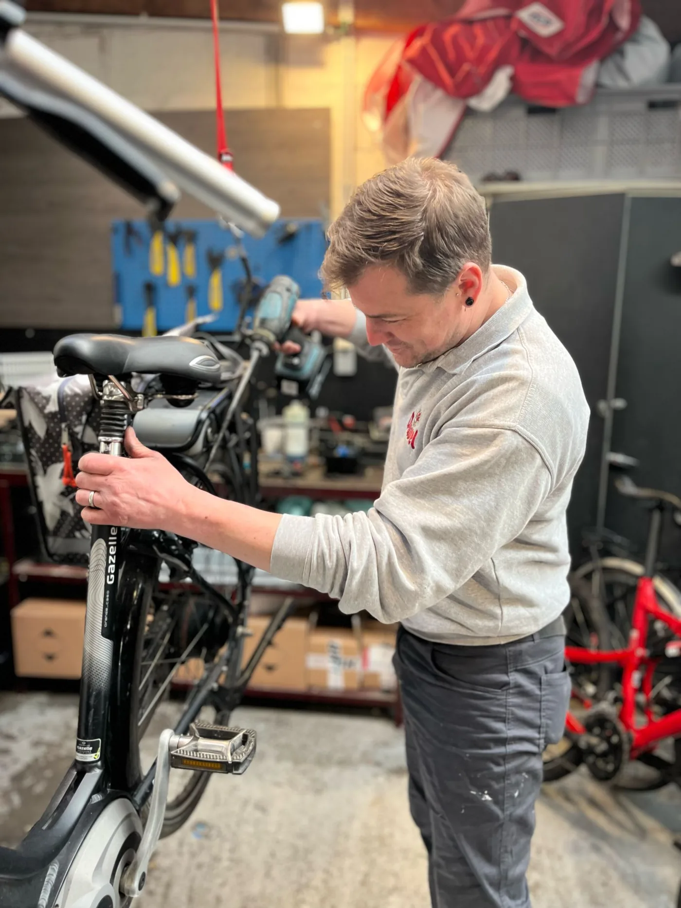
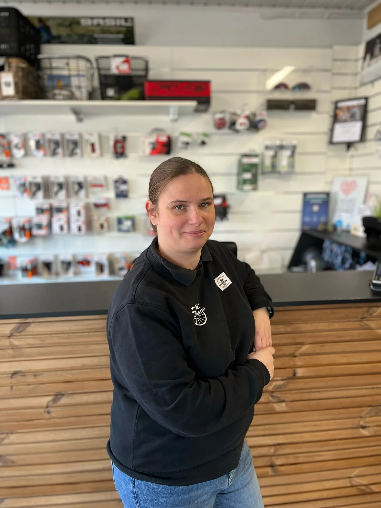
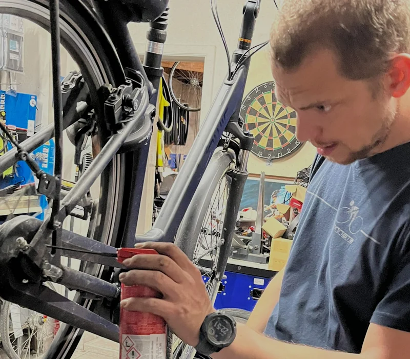

Zandstraat 25, Haasdonk
Benjamin
verkoopt ze. En herstelt
ze ook.
Stadsfietsen, e-bikes, racefietsen en kinderfietsen, met een eigen werkplaats voor onderhoud en herstellingen.
4,9★★★★★54 reviews
BenjaminEigenaar en hoofdmecanicien
De toonzaal
Kom ze zelf bekijken.
Van de eerste kinderfiets tot een e-bike voor het woon-werkverkeer. Kom kijken, vergelijken en vragen wat je wil weten.


E-bikes
Kinderfietsen

Helmen en zitjes
AccessoiresWinkel en werkplaats
Met drie in de zaak.
Benjamin en Jonas doen het onderhoud en de herstellingen in de eigen werkplaats. Jessy helpt je in de winkel en regelt de rest.
Breng je fiets binnen
Jonas
Herstellingen en onderhoud in de werkplaats

Jessy
Mede-eigenares, winkel en administratie

Benjamin
Eigenaar en hoofdmecanicien. Hij leidt de werkplaats.
uit 54 reviews op Google.
Lees ze allemaal
"Wiel binnen gebracht om te laten centeren nadat ik deze eerst zelf gevlochten had en bij benadering niet perfect gecentreerd kreeg. Met grote smile en vriendelijkheid aangepakt door Benjamin en na 2 dagen mocht ik er al omkomen. Super tevreden ben ik!!!"
"Zeer sterke service voor, tijdens en na verkoop."
"Snelle en vriendelijke service. Voordelig voor herstelling band."
Kom langs in Haasdonk.
Een vraag over een herstelling of een nieuwe fiets? Stuur een bericht of spring binnen in de Zandstraat.
- Maandaggesloten
- Dinsdag9u tot 12u en 13u30 tot 18u
- Woensdag9u tot 12u en 13u30 tot 18u
- Donderdaggesloten
- Vrijdag9u tot 12u en 13u30 tot 18u
- Zaterdag9u tot 12u en 13u tot 17u
- Zondaggesloten
Zandstraat 25, 9120 Haasdonk0473 28 81 29info@fietsenparidaens.be